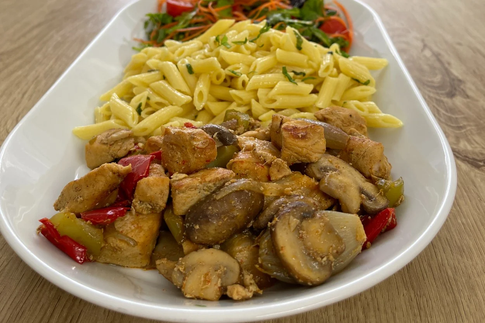

Mantarlı Tavuk Tarifi
Pişirme Süresi: 30 dakika

Mantarlı tavuk tarifi lezzetli ve hızlı bir yemek tarifidir. İşte malzemeler:
- 2 adet tavuk göğsü
- 200 gram mantar
- 1 soğan
- 2 diş sarımsak
- Yarım bardak krema
- Tuz ve karabiber
- Yapılışı:
- Kuşbaşı doğranmış tavuk eti tencereye alınır, kapağı kapatılarak suyunu çekene kadar kavrulur.
- Doğranmış mantar eklenerek tencerenin kapağı tekrar kapatılır, 5 dk. kadar pişirilir.
- Krema, sarımsak, karabiber ve tuz eklenir.
- Yarım su bardağı sıcak su ilave edilerek 3-4 dk. pişirilir, ocaktan alınır. Afiyet olsun